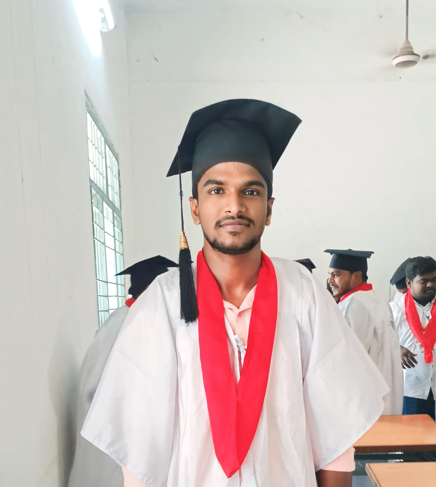
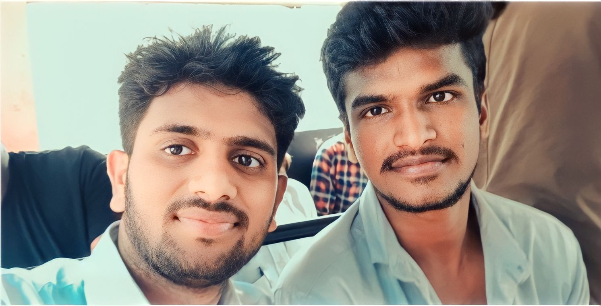
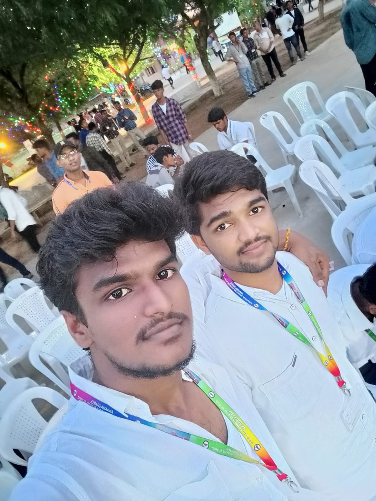

EDUCATION
Master of Technology (M.Tech)
2024 – 2026 (Pursuing)
Pursuing M.Tech in Computer Science & Engineering at Srinivasa Institute of Technology and Science (SITS), Kadapa. Focused on advanced computing, AI, and research. Developing strong technical and analytical skills.
Master of Computer Applications (MCA)
2021 – 2023
I completed my Master of Computer Applications from Annamacharya Institute of Technology & Sciences (AITS), Rajampet. During my studies, I developed strong skills in programming, database management, web technologies, and software development, which strengthened my technical foundation and fueled my passion for computer science.






Bachelor of Business Administration (BBA)
2018 – 2021
I completed my Bachelor of Business Administration from Loyola Degree College, affiliated with Yogi Vemana University, Kadapa. My studies gave me a strong foundation in management, leadership, organizational behavior, and communication, helping me develop practical skills for working in organizations.